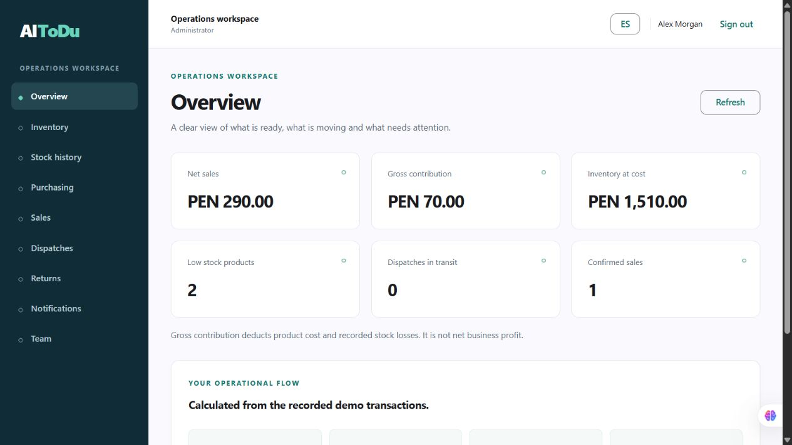

Receive with context
Create a purchase order and receive it partially or in full. Keep a record of stock movements and their reasons.
From the first stock receipt to the last delivery. One workspace for the people who keep your business moving.
University prototype · fictional data · no payment required
Connect the work at the warehouse, the sales desk and the delivery route.
Create a purchase order and receive it partially or in full. Keep a record of stock movements and their reasons.
Check stock before confirming a demo sale. Keep its receipt and review the effect on inventory.
Link a sale to a dispatch, assign a driver and vehicle, record incidents and confirm delivery.
See recorded sales, stock at cost and operational history. Trace the numbers back to their transactions.
An actual workspace capture after a local receiving, sale and delivery test. Every figure shown comes from fictional demo transactions.

Review inventory value, recorded sales and dispatch activity. Explore how connected operations can support better decisions.
Find a product, record a receipt or stock loss and track dispatch progress with clear actions and validations.
AI-ToDu is a university software engineering project for small businesses. We are refining its design and prototype through research, implementation and feedback.
This version uses a Fake REST API. Production services, commercial subscriptions and fiscal integration are future work; they are not available in this demo.
Read the project report ↗Use fictional data and explore the connected workflow.